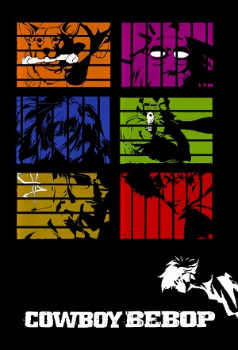

Cowboy Bebop (1998)
Science FictionDramaComedyAnimationAdventureActionWesternAnime
| Year | 1998 |
|---|---|
| Rating | TV-MA |
| Status | Completed |
| Seasons | 2 |
| Episodes | 30 |
| Genre | Science Fiction, Drama, Comedy, Animation, Adventure, Action, Western, Anime |
In the year 2071 humanity has colonized the entire Solar System through the use of "Phase Difference Space Gates". A catastrophic accident occurred during the development of the Gates, damaging both the Earth and the Moon, heavily irradiating the surface, and forcing most of mankind to evacuate to other planets of the Solar System. Wherever humanity goes, so goes its criminal element, and thus the need for those who hunt criminals. The newly formed solar system police reinstated the bounty scheme of the Wild West. Cowboy Bebop is the story of the four inhabitants of the spaceship Bebop, and the living they barely make at bounty hunting.
Episodes
Specials
| # | Title | Air Date | Synopsis |
|---|---|---|---|
| 1 | Mish-Mash Blues | 1998-06-26 | Nothing lasts forever. All things must come to an end. That is the so-called way of Nature. It's rather sudden, but this is the last episode, so I would like to take this opportunity to remember all the things that have |
| 2 | Session #0 | 1998-08-25 | This episode is a teaser for the release of the series to DVD. It contains interviews with the staff and cast, character info, a story digest of the episodes not broadcast on television (due to its depictions of gratuito |
| 3 | Cowboy Bebop: The Movie | 2001-09-01 | A tanker truck is blown to smithereens in the middle of a busy street, and a deadly viral infection is released with the explosion. The Bebop crew - Spike Spiegel, Jet Black, Faye Valentine, and Edward Wong Hau Pepelu Ti |
| 4 | Ein's Summer Vacation | 2012-12-21 | A newly animated special starring Ein! Included in the new Blu-Ray release. |
Season 1
After a hyperspace gateway accident devastated Earth, humanity colonized the solar system. With crime rampant, the Inter Solar System Police (ISSP) utilizes a legalized bounty hunter system. Enter Spike Spiegel and Jet Black, two bounty hunters (or "Cowboys") struggling to make ends meet while chasing "Woolongs" across the stars.
| # | Title | Air Date | Synopsis |
|---|---|---|---|
| 1 | Session #2: Stray Dog Strut | 1998-04-03 | A bounty takes Spike and Jet to Mars, where their target, Abdul Hakim, is wanted for stealing a valuable lab animal. To avoid capture, Hakim has had plastic surgery to change his appearance. |
| 2 | Session #3: Honky Tonk Women | 1998-04-10 | A night at the casino lands Spike and Jet in hot water when they cross paths with Faye Valentine, a stunning con artist wanted by the law – and the bad guys. |
| 3 | Session #7: Heavy Metal Queen | 1998-04-17 | The Bebop crew pursues a renegade explosives expert, and Spike crosses paths with a nameless space trucker that hates bounty hunters. |
| 4 | Session #8: Waltz for Venus | 1998-04-24 | Spike gets involved with a fugitive who is willing to risk his own life to restore his sister’s sight. Can the Bebop crew save the day before tragedy strikes? |
| 5 | Session #9: Jamming with Edward | 1998-05-01 | The Bebop crew tries to crack the case of mysterious satellite drawings appearing on the Earth’s surface, but they’ll need help from a hacker know as Radical Edward to earn their bounty! |
| 6 | Session #10: Ganymede Elegy | 1998-05-08 | When a case takes the Bebop crew to Jet’s old stomping ground, the big man crosses paths with an old lover – and her wanted boyfriend. |
| 7 | Session #11: Toys in the Attic | 1998-05-15 | When an unusual, blob-like space creature infects Ein, Faye, and Jet, Spike and Radical Edward must figure out a way to save their friends. |
| 8 | Session #12: Jupiter Jazz (1) | 1998-05-22 | Faye robs and abandons the Bebop crew, Spike goes in search of a woman he once knew, and Vicious makes another deadly appearance. |
| 9 | Session #13: Jupiter Jazz (2) | 1998-05-29 | Jet continues his mission to reunite his Bebop comrades, and Spike finds himself locked in a brutal dogfight with his old nemesis Vicious. |
| 10 | Session #14: Bohemian Rhapsody | 1998-06-05 | The Bebop Crew embarks on a wild goose chase of a bounty hunt that leads them deep into space in search of an ancient chess master. |
| 11 | Session #15: My Funny Valentine | 1998-06-12 | When Jet brings in a fugitive from Faye’s past, the rebellious beauty must decide whether to turn him in – or give an old flame one last chance. |
| 12 | Session #18: Speak Like a Child | 1998-06-19 | When a mysterious package arrives, Faye disappears on a gambling binge, and Spike and Jet embark on a frustrating search for ancient technology! |
| 13 | Session #1: Asteroid Blues | 1998-04-03 | Spike and Jet head to Tijuana to track down an outlaw smuggling a dangerous drug known as blood-eye. Jet wants the bounty, but Spike has eyes for a far prettier prize. |
| 14 | Session #4: Gateway Shuffle | 1998-11-13 | Faye teams up with Spike and Jet to track down a gang of space activists that plans on turning the human population into monkeys! |
| 15 | Session #5: Ballad of Fallen Angels | 1998-11-20 | Spike aims to collect the bounty on a member of the Red Dragon Syndicate, but his mission leads him into a deadly showdown with a face from his past! |
| 16 | Session #6: Sympathy for the Devil | 1998-11-27 | The latest case for the crew of the Bebop finds Spike pitted against a young boy with a talent for the harmonica – and murder. |
| 17 | Session #16: Black Dog Serenade | 1999-02-12 | Jet teams up with a former partner to settle the score with the man who took his arm, but he soon discovers that memories can be deceiving. |
| 18 | Session #17: Mushroom Samba | 1999-02-19 | After the Bebop crash lands, Ed and Ein’s search for food turns up some very expensive mushrooms with psychedelic side effects! |
| 19 | Session #19: Wild Horses | 1999-03-05 | While Spike pays a visit to the man who built his ship, Faye and Jet go fishing for space pirates. |
| 20 | Session #20: Pierrot Le Fou | 1999-03-12 | Spike takes a beating during a chance encounter with an indestructible assassin. While Jet searches for the secret to the madman’s power, Spike goes looking for payback! |
| 21 | Session #21: Boogie Woogie Feng Shui | 1999-03-19 | Spurred by a cryptic email, Jet goes looking for an old friend, but finds his daughter – and a mysterious sun stone – instead. |
| 22 | Session #22: Cowboy Funk | 1999-03-26 | Spike’s attempts to apprehend the infamous Teddy Bear Bomber are maddeningly derailed by a mysterious – and clueless – cowboy! |
| 23 | Session #23: Brain Scratch | 1999-04-02 | Faye goes undercover to collect the bounty on a deranged cult leader, but when the mysterious organization brainwashes her into a very deep sleep – she’ll need a little help from her friends. |
| 24 | Session #24: Hard Luck Woman | 1999-04-09 | Faye and Ed discover clues to their respective pasts that could send the crew of the Bebop heading in very different directions. |
| 25 | Session #25: The Real Folk Blues (1) | 1999-04-16 | Spike and Jet are ambushed by members of the syndicate, and Faye has an unexpected encounter with a woman from Spike’s past. |
| 26 | Session #26: The Real Folk Blues (2) | 1999-04-23 | Spike finally finds the woman he’s been searching for, and Faye makes a surprising return to the Bebop. With the syndicate in hot pursuit, Spike seeks to end the reign of Vicious. |